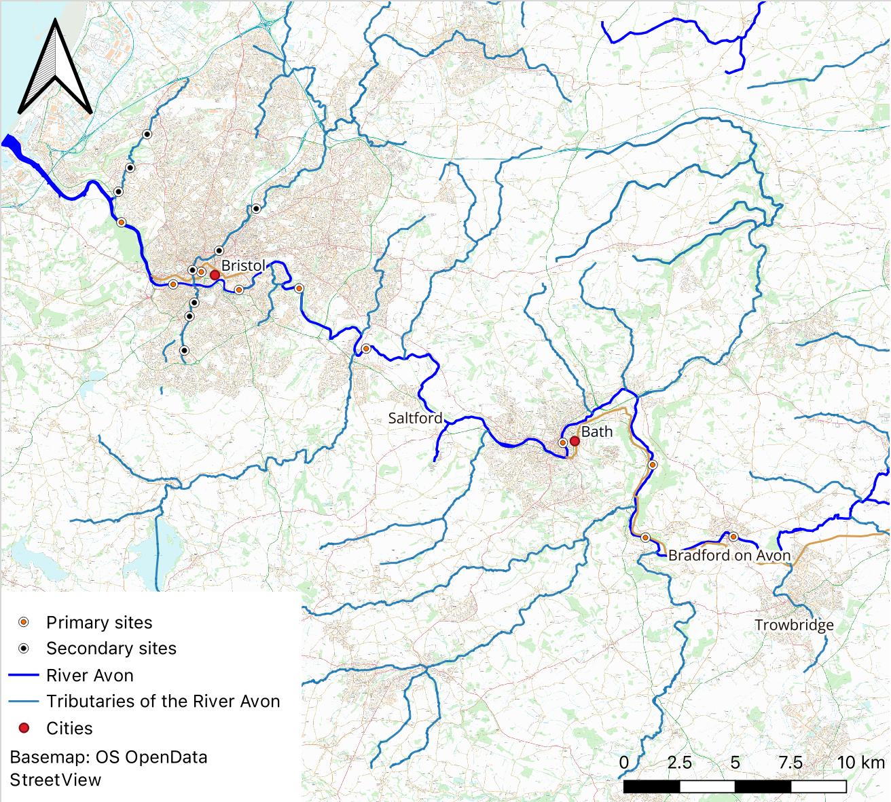
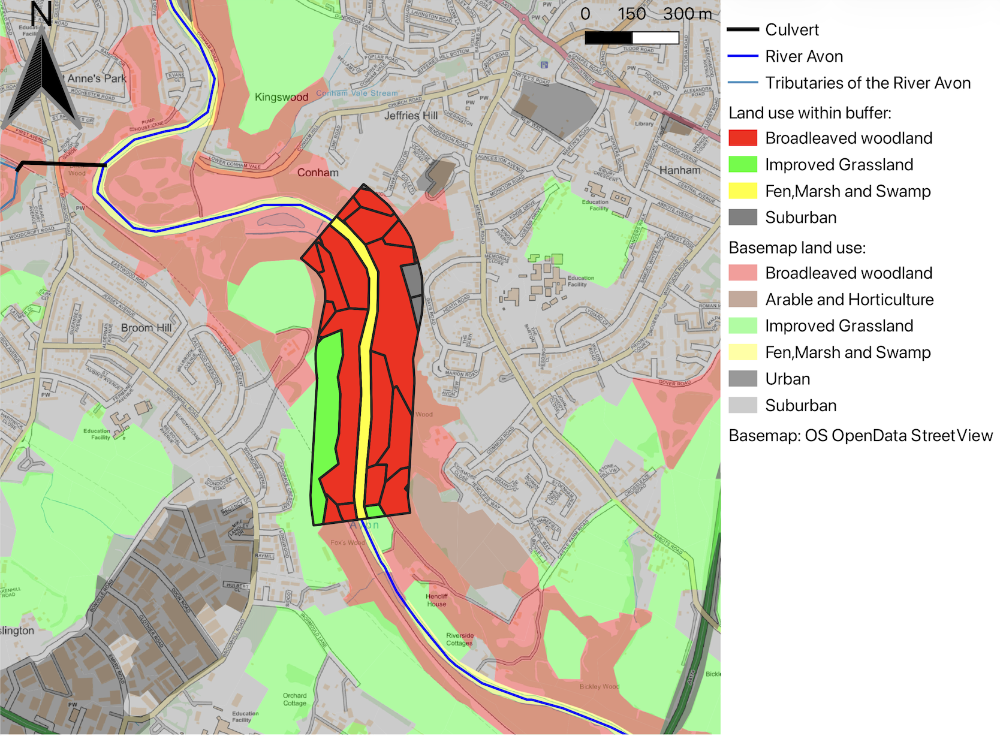

Landscape Composition, Configuration, and Cumulative Pollution Along an Urban River Continuum
A spatial and temporal analysis of the River Avon (Bristol) catchment | University of Bristol
Academic Evaluator Highlights
- "An ambitious dissertation that attempts to tackle the question of pollution in the River Avon through the lens of landscape composition and configuration. This is a novel component which goes beyond standard undergraduate approaches." — Dissertation Second Marker
- "The landscape composition, configuration, fragmentation and connectivity discussion is a highlight! ... The use of landscape metrics adds an interesting dimension to the research." — Dissertation First Marker
- "Demonstrates good engagement with the literature demonstrating good understanding of processes and controls on river water quality." — Faculty Review Board
View Full Undergraduate Dissertation
Summary
Surface water quality in river systems is governed by a combination of natural processes and anthropogenic pressures. While traditional hydrological research positions landscape composition (land cover proportions) as the primary explanatory variable, it frequently fails to account for the spatial configuration (fragmentation, patchiness, and connectivity) of land cover.
This project integrated empirical field monitoring, laboratory hydrochemical analysis, long term secondary datasets obtained via Freedom of Information (FOI) requests, and FRAGSTATS spatial metrics to examine spatial and temporal water quality dynamics across the low gradient, multi urban River Avon catchment.
Core Research Questions
- How well do spatial landscape metrics explain variation in surface water quality across the River Avon catchment?
- Which water quality indicators exhibit the greatest sensitivity to landscape patterns?
- Is there significant seasonal variation in water quality across sample sites along the urban river continuum?
Catchment Sample Locations

Figure 1: Spatial distribution of primary and secondary sampling locations across the River Avon catchment.
Methodology
- Primary Sampling & laboratory Analysis: Collected surface water samples across 10 locations in the River Avon catchment and Bristol Harbour. Measured in-situ parameters (DO, pH, EC, temperature) with calibrated probes and remaining parameters (E. coli, BOD7, turbidity, total nitrates, total phosphates) in the laboratory.
- Secondary Data Parsing: Obtained 20 years of historical water quality data via FOI from Bristol City Council, filtering for consistent temporal subsets in 2013 and 2018.
- Adapted Water Quality Index (NSFWQI): Derived parameter sub-indices using non-linear curve fitting to calculate standardized 9-parameter (primary) and 7-parameter (secondary) NSFWQI metrics.
- GIS & FRAGSTATS Spatial Analysis: Calculated compositional metrics (Percentage Cover) and configurational metrics (Aggregation Index, Interspersion & Juxtaposition Index, Shannon's Diversity Index, Patch Richness Density) across variable riparian buffer zones using UKCEH Land Cover Maps.
- Statistical Modelling: Conducted Spearman's rank correlation, Multiple Linear Regression (MLR), Redundancy Analysis (RDA), and spatial autocorrelation testing (Moran's I).
Riparian Buffer & Land Cover Extraction

Figure 2: Representative spatial buffer delineation around a sampling point, illustrating landscape composition and configuration extraction across distinct land use classes.
Key Findings
Urban Cover Dominance
Urban land cover emerged as the dominant multivariate driver of water quality degradation, explaining 42.55% of overall water quality variation (p = 0.021).
Suburban Composition
Suburban percentage cover was a significant predictor in secondary datasets (rho = -0.893, p = 0.012), reflecting diffuse runoff and private drainage impacts.
Indicator Sensitivity
Dissolved Oxygen (DO) was the most sensitive pairwise indicator, showing strong negative correlation with urban cover (rho = -0.890). Electrical Conductivity (EC) was most responsive in multivariate space.
Urban River Continuum
Lack of seasonal signal across most sites reinforced that continuous urban point-source inputs mask natural seasonal fluctuations across the catchment continuum.
Technical Competencies
QGIS R Statistical Modelling FRAGSTATS / Landscape Metrics Field Sampling Laboratory Microbiology & BOD Testing Spatial Autocorrelation (Moran's I)